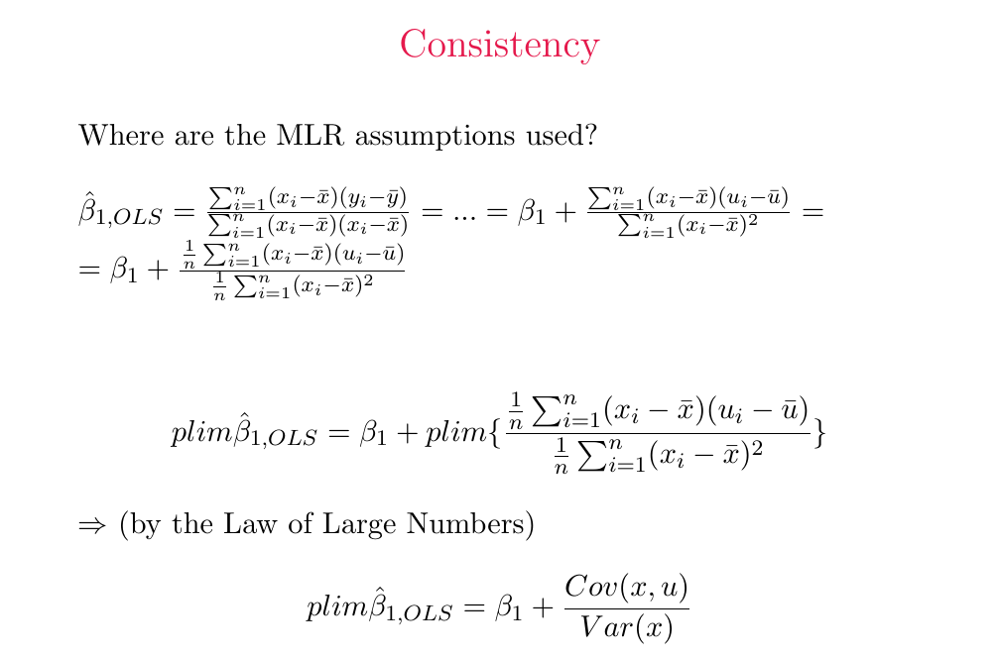

Derive consistency and distinguish it from unbiasedness
Explanation, worked examples and practice
Useful first: Derive and interpret scalar and matrix OLS
Outcome and conditions
Derive the probability limit from centered OLS, state sampling/moment/nondegeneracy and orthogonality conditions, and discriminate finite-sample unbiasedness from concentration in probability.
Study conditions, assessment scope and sources
Required components (all must be elicited and passed):
- C1: Normalized centered ratio and justified probability limit with correct target.
- C2: States sampling/finite moments/positive finite denominator and weaker intercept/slope moments.
- C3: Precise fixed \(\epsilon\) probability definition and larger-\(n\) limitation.
- C4: Correct Chebyshev bound and nuanced unbiasedness/bias/dispersion distinction.
Finished-note authority:
- Consistency: concentration as sample size grows
- Why population covariance determines the probability limit
- A weaker exogeneity condition
- How unbiasedness and consistency can differ
Teaching/support: relevant finished notes, supplied prompts and calculator permitted. Independent and delayed checks: closed notes, no lesson/keys/software-generated explanation/search/AI assistance, no hints; a basic arithmetic calculator is allowed and must be reported. Numerical inputs/cutoffs/p values in the question are allowed data. The teacher hides keys until an answer is committed. Unknown assistance/access/exposure is unscorable for independent acquisition. A previously exposed item cannot be counted as fresh. A learner may explain orally or in writing; mathematical reasoning and units must be explicit.
Prerequisites and checks
Check the prerequisites
O004-P1
item_id: O004-P1, item_version: 1, role: prerequisite diagnostic. Capability: O002; reason: Centered ratio is needed to link sample co-movement to population covariance.
Prompt: Write \(S_{xy}/S_{xx}\) and explain why multiplying its numerator and denominator by \(1/n\) changes no ratio.
Key: Both centered sums; the common positive factor cancels; denominator must be nonzero.
Rubric: pass only if the stated answer and its essential reason are correct without help; partial for incomplete reasoning or a recoverable arithmetic slip; fail for a contrary concept or no usable answer. This diagnostic never counts toward acquisition. Repair: Use O002 Explanation steps1–2 and supported task. For local probability language use Explanation steps3–5 below.
Prepared prerequisite: Explanation steps.
Adequate committed current-version evidence for the named capability permits skipping that diagnostic; familiarity/confidence does not. If there is no evidence, ask each diagnostic once. Local foundation failures use the exact explanation here, not an improvised prerequisite curriculum.
Motivation, intuition, and definitions
Derive the probability limit from centered OLS, state sampling/moment/nondegeneracy and orthogonality conditions, and discriminate finite-sample unbiasedness from concentration in probability. The question is what the available information lets us calculate or conclude, and which extra conditions the conclusion needs.
Consistency is \(\hat\theta_n\to_p\theta\): for every fixed \(\epsilon>0\), \(P(|\text{estimate}-\text{target}|>\epsilon)\to0\). It concerns a sequence indexed by \(n\), not monotonic improvement of every realized sample. Probability limit names the value around which the sequence concentrates; it may differ from the intended parameter.
Explanation steps
- Use \(\hat\beta_1=\beta_1+\frac{n^{-1}\sum(x_i-\bar x)(u_i-\bar u)}{n^{-1}\sum(x_i-\bar x)^2}\), obtained by centered substitution and common division by \(n\).
- Under independent random sampling and finite moments sufficient for the law of large numbers, sample covariance tends to \(\operatorname{Cov}(x, u)\), sample variance to \(\operatorname{Var}(x)\). Require positive finite population \(\operatorname{Var}(x)\) so the ratio is valid. Then \(\operatorname{plim}\text{slope}=\beta_1+\operatorname{Cov}(x,u)/\operatorname{Var}(x)\).
- If covariance \(0\) the slope limit equals \(\beta_1\); otherwise larger samples concentrate at the wrong target. Zero conditional mean is sufficient, stronger than needed for these moments. The weaker condition is \(E[u]=0\) for the intercept and \(\operatorname{Cov}(x_j,u)=0\) for every nonconstant regressor, alongside other model/sampling/moment/rank conditions. \(\operatorname{Cov}(1,u)=0\) says nothing about \(E[u]\).
- Finite-sample unbiasedness concerns an expectation at each \(n\). Consistency concerns concentration. Neither follows from one estimate or an unqualified large \(n\).
- For an unbiased sequence, Chebyshev bounds \(P(|\widehat\theta-\theta|>\epsilon)\leq\operatorname{Var}(\widehat\theta)/\epsilon^2\); if variance \(\to 0\), the probability bound \(\to 0\). Unbiasedness alone does not require variance shrinkage. A finite-sample biased sequence can be consistent if error/bias disappears with \(n\) and its sampling error concentrates; do not infer consistency solely from decreasing bias without controlling dispersion.
Read the full explanation
Reading context
Deliver these complete reused passages before the worked example; earlier concise prompts are checkpoints, not substitutes. Necessary prerequisites use the complete prepared lessons specified above.
Source passage
Origin: reused complete checked passage Consistency: concentration as sample size grows; fingerprint afc4f90940a6f9e889acff6e5e1194c5fde424636cbfca31f540eee2c5051595. Heading depth alone is adapted.
Consistency: concentration as sample size grows
Consistency is convergence in probability: \(\hat\beta_{j,n}\xrightarrow{p}\beta_j\). More explicitly, for every fixed tolerance \(\varepsilon>0\),
The subscript \(n\) emphasizes a sequence of estimators indexed by sample size. Consistency says that the probability of an error larger than any fixed tolerance approaches zero. It does not promise monotonic improvement for every realized sequence of samples. The lecture states OLS consistency under the first four assumptions and then shows that zero conditional mean is stronger than necessary for this particular large-sample result. Lecture 1, PDF pp. 20–21
Why population covariance determines the probability limit
Divide both parts of the disturbance ratio by \(n\):
Under random sampling and finite moments sufficient for the law of large numbers, the numerator converges in probability to \(\operatorname{Cov}(x,u)\) and the denominator to \(\operatorname{Var}(x)\). With a positive finite population regressor variance, taking the ratio therefore gives
Here \(\operatorname{plim}\) means probability limit. Finite moments and a nonzero limiting denominator are the regularity requirements needed to interpret the lecture's law-of-large-numbers step; the slide does not spell them out. If \(\operatorname{Cov}(x,u)=0\), the additional term vanishes. If it is nonzero, more observations concentrate OLS around the wrong value. A larger sample therefore cannot by itself cure regressor–disturbance correlation. Lecture 1, PDF p. 22, probability-limit derivation

Source crop: Lecture 1, PDF p. 22. Centering and division by \(n\) turn the estimation-error ratio into sample covariance over sample variance, which exposes its population limit. Source, PDF p. 22
A weaker exogeneity condition
For consistency, the lecture replaces zero conditional mean by the weaker conditions
The first condition handles the intercept, and the covariance conditions handle the slopes. The slide writes its index as \(j=0,\ldots,k\); with a constant regressor \(x_0=1\), its covariance with \(u\) is automatically zero. This weaker condition, together with the other sampling, model, nondegeneracy, and moment conditions, supports consistency but need not imply finite-sample unbiasedness. Zero conditional mean implies these unconditional moments, whereas unconditional zero covariance need not imply a zero conditional mean at every regressor value. Lecture 1, PDF p. 21
How unbiasedness and consistency can differ
The lecture states that an unbiased estimator is consistent if its variance tends to zero. Agent explanation: when \(E[\hat\theta_n]=\theta\), Chebyshev's inequality bounds \(P(|\hat\theta_n-\theta|>\varepsilon)\) by \(\operatorname{Var}(\hat\theta_n)/\varepsilon^2\), so a vanishing variance implies convergence in probability. Unbiasedness alone does not control the variance. Conversely, finite-sample bias can vanish as \(n\) grows, so a biased estimator can still be consistent. These are properties of the sampling sequence, not a classification that can be proved by examining one estimate. Lecture 1, PDF p. 21
Worked example
O004-W v1, hypothetical \(\beta_1=-2, \operatorname{Cov}(x, u)=3, \operatorname{Var}(x)=6\) with the note's regularity: \(\text{plim}=-2+3/6=-1.5\). Population correlation contributes \(+0.5\), so more data do not recover \(-2\). Separately, an unbiased sequence with \(\operatorname{Var}=4/n\) and \(\epsilon=0.5\) has error probability \(\le (4/n)/(0.25)=16/n\), tending \(0\) (a bound may exceed \(1\) for small \(n\) without becoming a probability claim). This is an application of the finished note's Chebyshev explanation, not a new theorem.
Role: complete demonstration, never independent evidence. Unless explicitly identified as a finished-note result, numerical/context examples are agent-created hypothetical instantiations of the note-supported mechanism.
Practice with fading assistance
Write your reasoning, then reveal the complete key to check each step.
A local draft for your own study.
Reveal explanation
Key and essential reasoning: Normalized centered numerator \(\to\)\(\operatorname{Cov}\), denominator \(\to\)\(\operatorname{Var}>0\) finite; plim \(3-2/4=2.5\), inconsistent for \(3\). Every fixed \(\epsilon>0\) error probability \(\to 0\). Sampling/finite moments/nondegeneracy needed. \(E[u]=0\)/intercept and \(\operatorname{Cov}(x_j,u)=0\)/slopes are weaker than conditional mean \(0\). Bound \(4/n\to 0\); fixed-\(n\) unbiasedness by itself does not force variance \(0\).
Task rubric: apply C1–C4 and the cross-task decision rule below. The proof/definition/condition steps in Explanation steps are the exact shared conceptual key, not optional extra credit. All four components are expressly requested above.
A local draft for your own study.
Reveal explanation
Key and essential reasoning: plim \(2+3/5=2.6\), not \(2\). Ratio and limits under independent random sample/finite sufficient moments/positive finite \(\operatorname{Var}\) and specified linear model; no perfect collinearity/nondegeneracy. Error probability outside every fixed \(\epsilon\) tends \(0\) at consistent target. \(E[u]=0\) and all slope covariances \(0\); constant covariance automatically \(0\). Bound \((9/n)/0.09=100/n\to 0\); unbiasedness alone insufficient, biased sequence may be consistent if error concentrates and bias vanishes.
Task rubric: apply C1–C4 and the cross-task decision rule below. The proof/definition/condition steps in Explanation steps are the exact shared conceptual key, not optional extra credit. All four components are expressly requested above.
A local draft for your own study.
Reveal explanation
Key and essential reasoning: Centered normalized ratio \(\to\)\(0/4\), plim \(-1\). Definition every fixed \(\epsilon\) error probability \(\to 0\); model/random sampling/finite sufficient moments/nondegenerate positive finite \(\operatorname{Var}\). \(E[u]=0\)/all regressor covariances \(0\) weaker than \(E[u\mid x]=0\), so not enough for finite-sample conditional proof. Constant variance does not establish shrinking dispersion/consistency (do not assert every constant-variance sequence necessarily inconsistent); \(\operatorname{Var}=2/n^{2}\) bound \(50/n^{2}\to 0\). Vanishing bias alone also insufficient without concentration; biased sequence can be consistent.
Task rubric: apply C1–C4 and the cross-task decision rule below. The proof/definition/condition steps in Explanation steps are the exact shared conceptual key, not optional extra credit. All four components are expressly requested above.
Rubric and independence
Self-assessment criteria and tutor checks
Pass: all C1–C4 correct, essential reasoning explicit, known independent conditions and fresh item. Partial: one or more components missing, an unexplained claim, or a recoverable arithmetic slip with sound method. Fail: a critical conceptual error, wrong method/assumptions/interpretation, or no usable attempt. Unscorable: unknown conditions/exposure or an alternative outside the prepared key. Equivalent algebra, clear verbal reasoning and synonymous units/assumption names are acceptable; assumption numbers alone are insufficient. Numerical rounding to sensible precision is acceptable. A isolated arithmetic slip is partial and is not treated as established conceptual failure; the learner must independently repair it with a fresh prepared full item before a pass qualifies. No numeric grading scale is invented.
Every full task I1, I2, D1, D2 expressly requests all C1–C4 and has a complete task-specific key plus exact conceptual reasoning above. Omitted pieces are partial even if an unasked answer happens to sound fluent. Supported S and narrow correction C never substitute for a full check.
Permitted acquisition routes: I1+I2; if an item was exposed, failed or unavailable, replace only that full check with a previously unexposed D1 or D2. Any selected pair of distinct items from {I1,I2,D1,D2} covers C1–C4 twice. Do not use an item twice or count a corrected answer to the same item as fresh. D items used immediately are logged as independent replacement checks, not delayed evidence. No shortened variant or arbitrary new task is permitted. Two complete unassisted passes under O004-C1 establish acquisition; they do not establish retention. This is a default evidence rule, not a learner outcome.
Component-to-item coverage on every route:
| Component | S | I1 | I2 | D1 | D2 | Correction C |
|---|---|---|---|---|---|---|
| C1 | supported | required | required | required | required | narrow repair only |
| C2 | supported | required | required | required | required | narrow repair only |
| C3 | supported | required | required | required | required | narrow repair only |
| C4 | supported | required | required | required | required | narrow repair only |
Misconceptions and correction
Sign: “large samples cure endogeneity”, “unbiased implies consistent”, or treating covariance \(0\) as conditional mean \(0\). Correction: the LLN retains \(\operatorname{Cov}(x,u)/\operatorname{Var}(x)\); concentration needs a correct limit, while finite-sample unbiasedness alone gives no shrinking-error guarantee. Hint1: identify numerator/denominator limits. Hint2: add their ratio to \(\beta\).
Score the original response before help. One ambiguous error only suggests a tentative misconception; establish it only from explicit reasoning or repeated diagnostic signs. Explain the relevant prepared step and its consequence; never label the learner from confidence or a single slip.
O004-C
item_id: O004-C, item_version: 1, role: targeted correction; not an acquisition substitute.
Prompt: Fresh O004-C v1: \(\beta=4, \operatorname{Cov}=2, \operatorname{Var}=8\) under regularity. If \(n\) becomes huge, which value is approached and does that make the estimator consistent for \(4\)?
Key: 4.25; no. The population covariance term remains0.25. Narrow repair only.
Rubric: correct supplied answer plus the exact boundary/reason is a repair pass; omitted reason is partial; repeating the original misconception is fail. Repair success licenses returning to a fresh full prepared item; it never replaces full C1–C4 coverage.
Immediate and delayed checks
I1/I2 are immediate checks after instruction or a justified expert route. D1/D2 are distinct parallel/near-context applications, not broad-transfer proof. Teach records exposure; the exact original must not be re-used as a fresh retrieval question. For delayed evidence require at least24 actual elapsed hours since qualifying acquisition and known independent conditions; ask the item before recap or solutions, record any intervening study, and apply all C1–C4. An early answer can be immediate evidence only.
A local draft for your own study.
Reveal explanation
Key and essential reasoning: plim \(3\), so inconsistent for \(5\); larger \(n\) concentrates at \(3\) under regularity. Normalized centered ratio yields \(\operatorname{Cov}/\operatorname{Var}\); independent sampling/sufficient finite moments/positive finite variance. Definition as above; \(E[u]=0\)/all nonconstant covariances \(0\), conditional mean \(0\) sufficient but stronger. Bound \(100/n\to 0\); unbiasedness alone not enough, finite-sample bias may vanish with error concentration.
Rubric: all C1–C4 plus known fresh/independent/elapsed conditions for delayed pass. Parallel numerical/context changes support the bounded capability; they do not alone demonstrate broad transfer.
A local draft for your own study.
Reveal explanation
Key and essential reasoning: plim \(0.5\), centered ratio limit \(0/2\) under independent sample/sufficient finite moments/positive finite regressor variance. Probability definition; \(E[u]=0\) for intercept, slope covariances \(0\); conditional mean \(0\) is stronger than unconditional moments. Bound \(300/n^{2}\to 0\). Unbiased alone/large \(n\)/bias \(\to 0\) alone insufficient to demonstrate concentration or correct target.
Rubric: all C1–C4 plus known fresh/independent/elapsed conditions for delayed pass. Parallel numerical/context changes support the bounded capability; they do not alone demonstrate broad transfer.
Content provenance and generation boundaries
Sources and scope
Complete checked-note passages above are reused with only heading-depth and explicit mathematical typography adaptation; exact origin/fingerprint and asset dependencies are in source_manifest.md. All earlier plan-created exercises/full keys and named evidence routes remain intact. Hypothetical arithmetic instantiates the included definitions and does not introduce empirical results or new academic claims. Only named prepared full-capability forms and their existing permitted pairs can certify acquisition/delayed evidence. Extra checked explanation/practice cannot replace a named full form or reassessment gate. Equivalent verified methods may meet the unchanged pre-answer criterion; ambiguous criteria or an exhausted fresh bank return to plan. The current objective revision is 2; item/criterion versions remain as explicitly stated above.